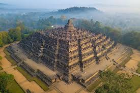

Destinasi Populer

Bali
Bali adalah sebuah pulau dan provinsi di Indonesia yang terkenal di seluruh dunia sebagai destinasi pariwisata utama, dijuluki "Pulau Dewata" karena keindahan alamnya yang memukau, budaya yang kaya, dan mayoritas penduduknya beragama Hindu Bali yang toleran.
.jpg raja-ampat_11zon.webp)
Raja Empat
Raja Ampat adalah gugusan kepulauan di Papua Barat Daya, Indonesia, terkenal sebagai surga bawah laut dengan keanekaragaman hayati laut tertinggi di dunia,.

Borobudur
Candi Borobudur adalah candi Buddha terbesar di dunia, monumen bersejarah megah, dan Situs Warisan Dunia UNESCO yang terletak di Magelang, Jawa Tengah, Indonesia